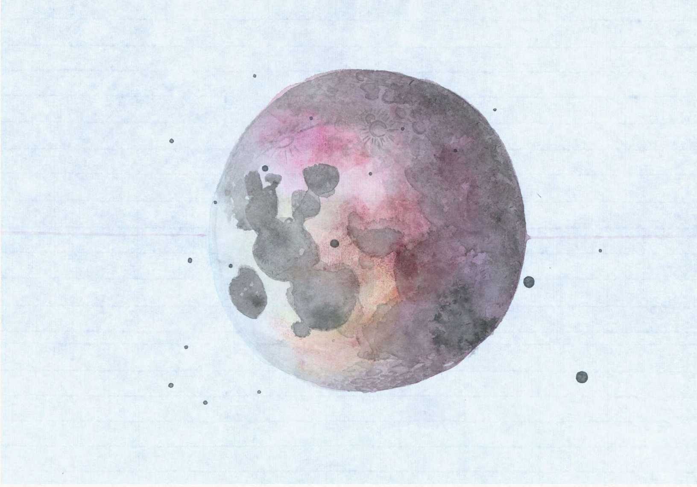
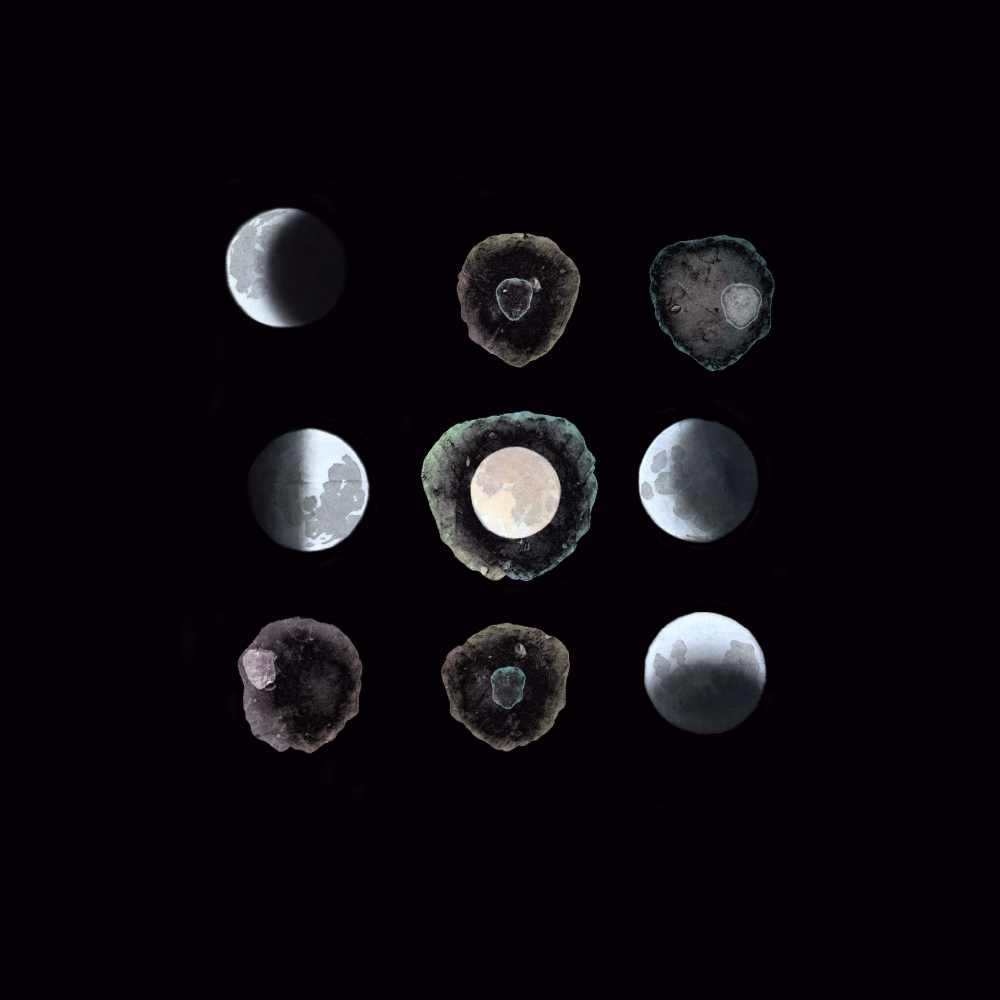
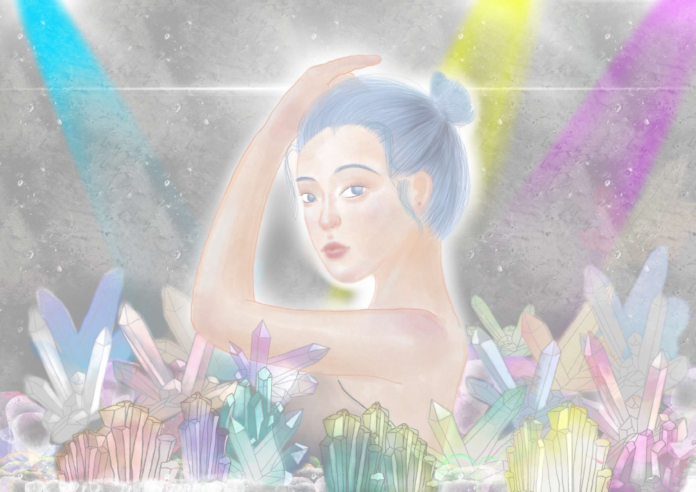
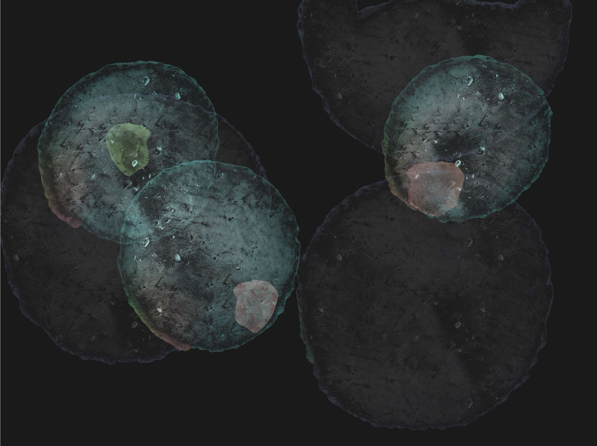
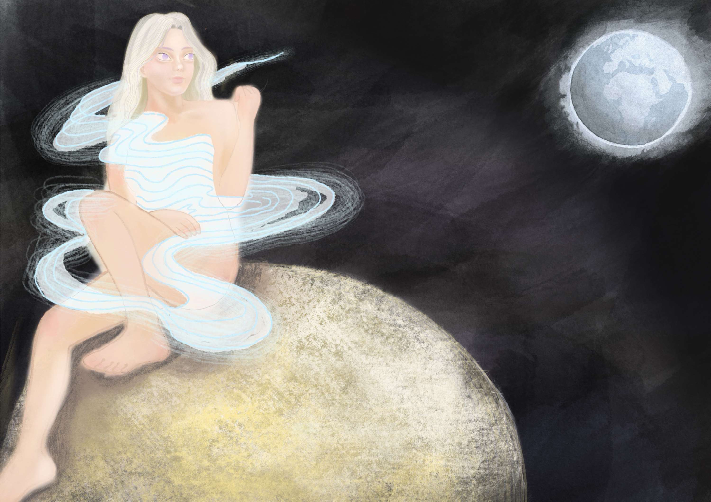
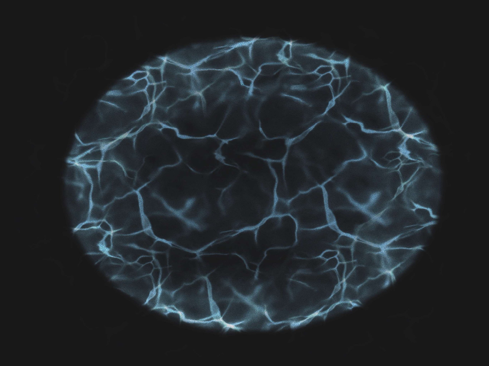
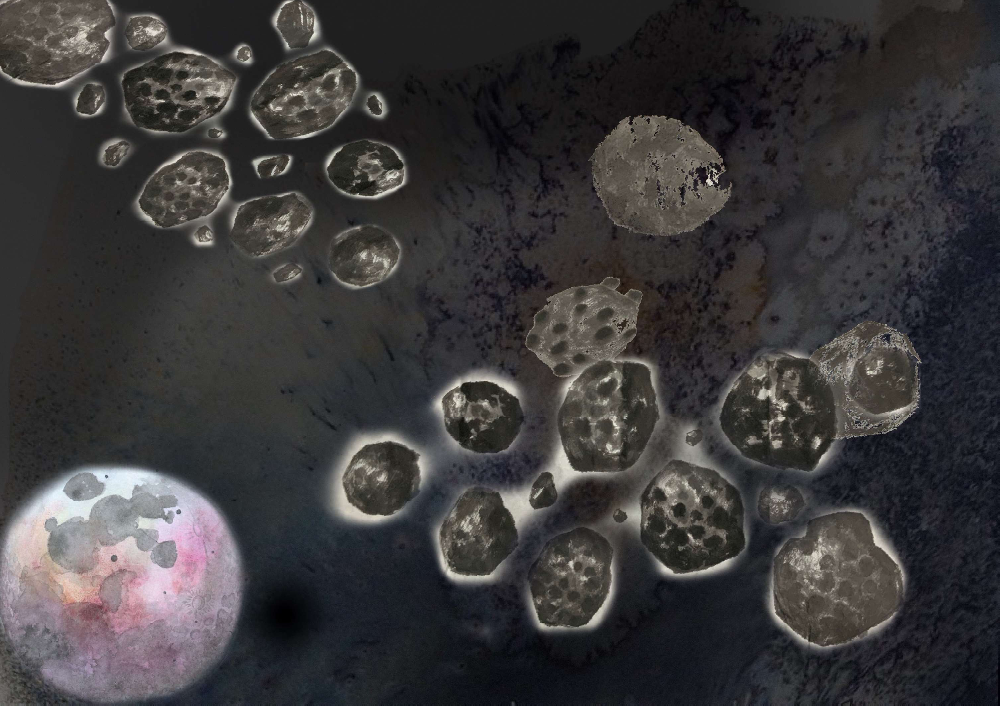

《九分之一》

《流動》
一個看似靜止的人物佇立在無垠的空間， 周圍流動著的隕石。 到底是誰在改變流動？

《旅途》
來到世上的我們都像是旅人。 帶著自己所有的世界觀， 經驗著世界， 但我們卻隨著所經歷的事一點一滴被改變了。

《變化》
遙遠龐大的月球它的圓缺變化一直使我覺得很神祕又美麗。 而和最近又渺小的細胞一樣， 它也是沒有一刻停下的不斷更替著。 將看似一樣卻又不一樣的物件組合製造出一種看似對比卻又相同的衝突感。

《恆星》
有的人的世界就像恆星一樣閃亮， 在暗黑的空間中閃爍著。

《黯淡》
然而也有的人的世界黯淡在無垠的時間空間找尋光。

《渺小》
有的人世界渺小。 就像一個細胞， 它可能就是一個世界。

《混亂》
有的人世界混亂無序。 就像不斷的熵增， 變得更無序。 也許還是從無序開始， 變得更無序。

《舒適》
有的人世界舒適。 打從到世界的一開始， 他就可以安靜的感受世界， 周遭的一切總是那麼的舒服安適。

《眺》
每個人都是在自己行星上觀察到別人世界， 從自己的位置上感受到世界。

《事件視界》
這件作品像是原子裡面的世界， 同時也像大爆炸後擴展開來的世界。 到底開始是什麼樣子。 我們期待的又是什麼樣子。

《不同》
期待著是不是哪天也能夠像恆星一樣閃耀發光， 或許最後還是一樣， 誰也不會真的成為誰， 在這趟旅途中， 可能不一定閃耀精彩， 但都變得更豐富了吧。